Publications
104. Prabhu, P. T.; Patel, D. M.; Holtz, K. C.; Watts, Q.; Roling, L. T.; Tessonnier, J.-P. Engineering the Solid–Liquid Interface of Carbon Electrodes for Enhanced Organic Electrosynthesis. ACS Appl. Mater. Interfaces 2025. [link]
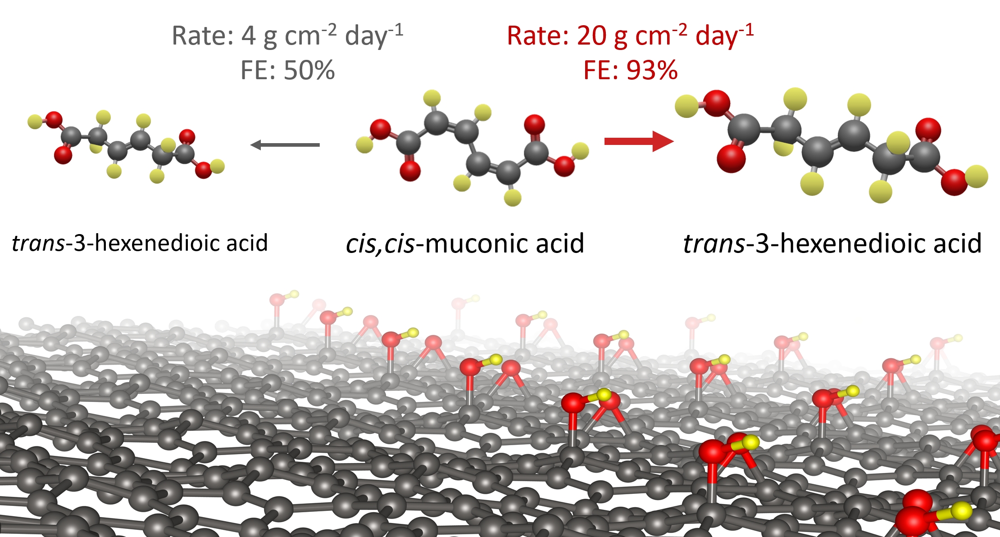
103. Koushik, A. K. S.; Vannini, P.; Plut, E.; Jansen, W.; Waldvogel, S. R.; Tessonnier, J.-P. Quaternary Ammonium Additives as Dual Inhibitors of Hydrogen Evolution and Cathodic Corrosion in Aqueous Electrosynthesis. ACS Electrochem. 2026, 2 (1), 175–187. [link]
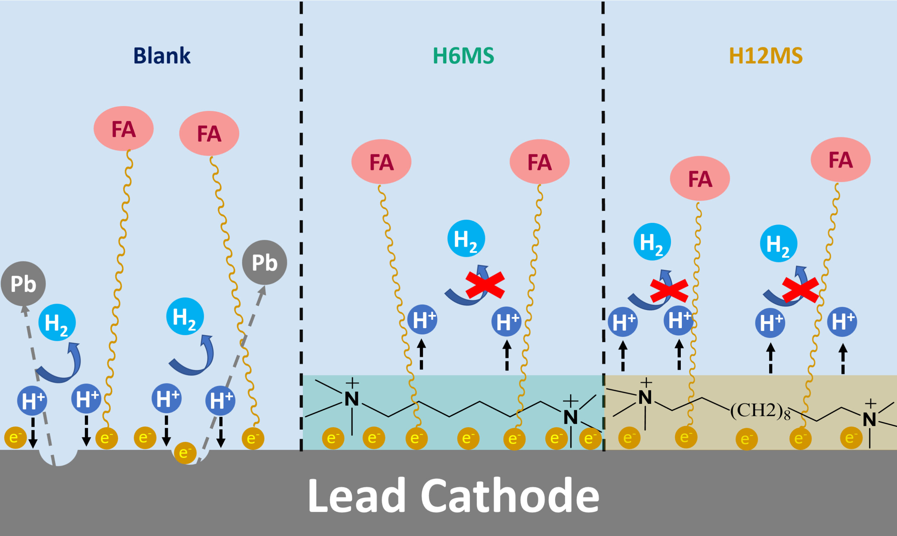
102. Elhambakhsh, A.; An, L.; Qi, L.; Tessonnier, J.-P. Self-Standing Carbon Nanofibers@Carbon Felt Electrodes to Boost Electrolyzer Productivity: Application to the Electro-Manufacturing of Trans-3-Hexenedioic Acid and Adipic Acid. ChemSusChem 2025, 18 (23). [link]
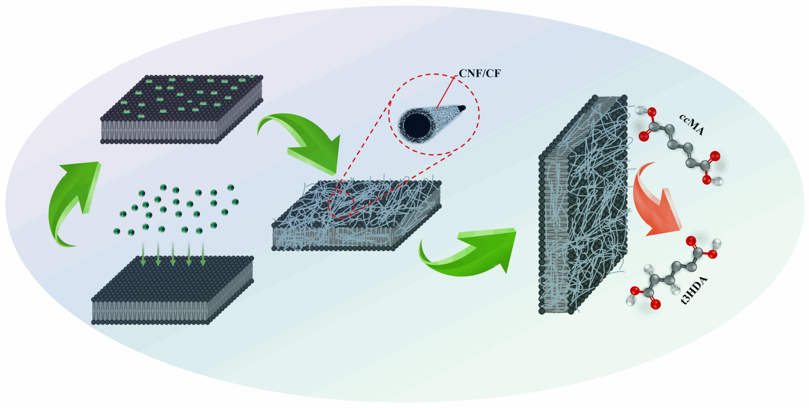
101. Debnath, D.; Sahu, P.; Nejad, M.; Pu, Y.; Tessonnier, J.-P.; Ragauskas, A.; Qi, L.; Wang, T. Structure-Guided Utilization of Lignocellulose for Catalysis, Energy, and Biomaterials. Cell Rep. Phys. Sci. 2025, 6 (11), 102911. [link]
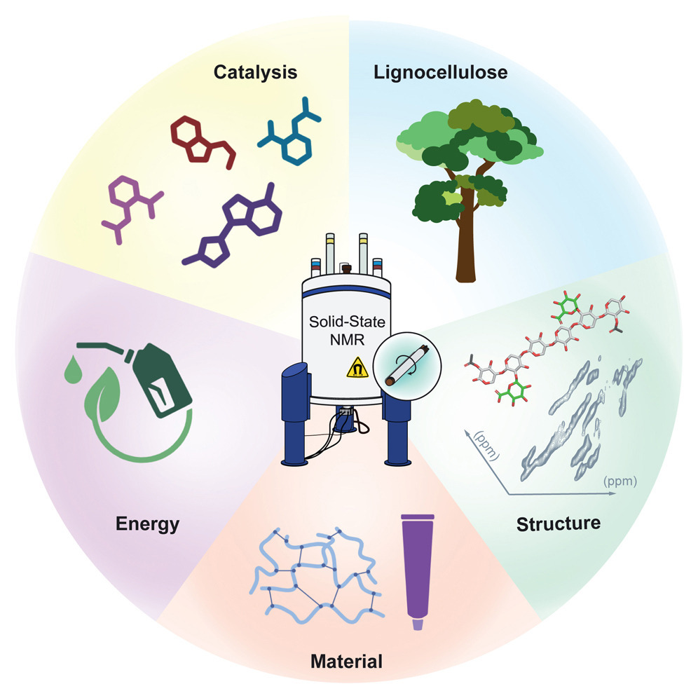
100. Koushik, A. K. S.; Finley, D.; Intan, N. N.; Showman, L. J.; Podolak, K.; Crandall, Z.; Windus, T. L.; Pfaendtner, J.; Waldvogel, S. R.; Kraus, G. A.; Tessonnier, J.-P.; A Platform Approach for Designing Sustainable Indole Thiosemicarbazone Corrosion Inhibitors with Enhanced Adsorption Properties, Langmuir 2025, 41, 8407-8423. [link]

99. Carter, P.; Meyer, P. M.; Lee, T.-H.; Dileep, D.; Chalgren, N. L.; Noreen, S.; Forrester, M. J.; Shanks, B. H.; Tessonnier, J.-P.; Cochran, E. W.; Leveraging the Bio-Enabled Muconic Acid Platform Via Phospha-Michael-Addition: Intrinsically Flame-Retardant Nylon-6,6/DOPO Copolymers, RSC Sustainability 2024, 2, 2968-2978. [link]
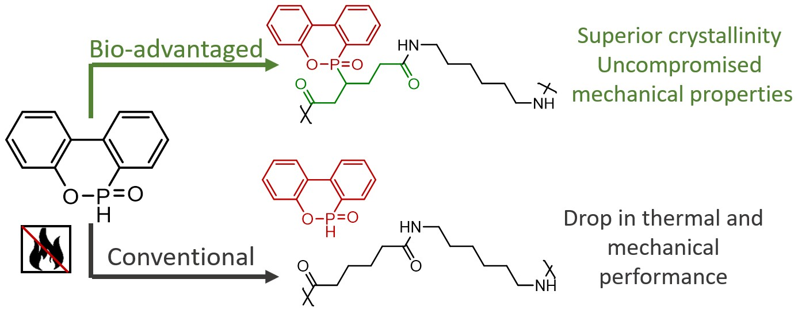
98. Kohler, A. J.; Vincent Sahayaraj, D.; A, L.; Ehlers, A.; Bai, X.; Shanks, B. H.; Tessonnier, J.-P.; Nonreductive Fast Lignin Solvolysis in Flow-through Reactors for the Sustainable Production of BTEX Aromatics from Corn Stover, ACS Sustainable Chem. Eng. 2024, 12, 12504-12515. [link]
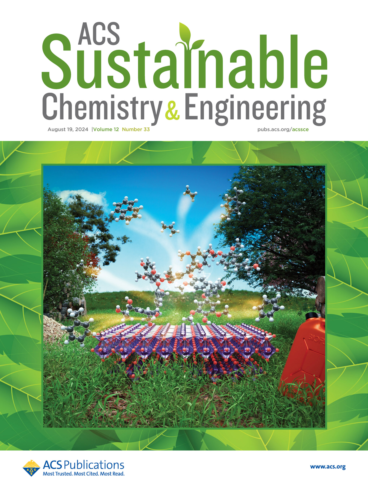
97. Tessonnier, J.-P.; When Biocatalysis Meets Electrocatalysis: A Leap Forward in the Sustainable Production of Adiponitrile, Chem Catalysis 2024, 4, 10100. [link]
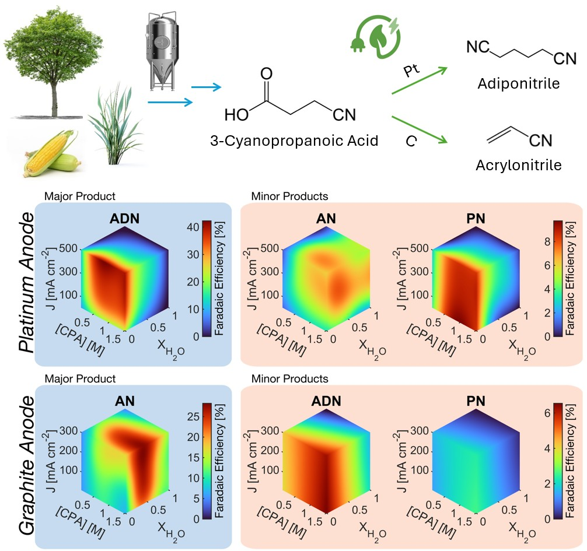
96. Chen, S. S.; Glezakou, V.-A.; Holewinski, A.; Lopez-Ruiz, J.; Tessonnier, J.-P.; Advances in Electrosynthesis for a Greener Chemical Industry, Green Chem. 2024, 26, 4240-4241. [link]
95. Patel, D. M.; Prabhu, P. T.; Gupta, G.; Dell’Anna, M. N.; Kling, S.; Nguyen, H. T.; Tessonnier, J.-P.; Roling, L. T.; Structure Sensitivity of the Electrochemical Hydrogenation of cis,cis-Muconic Acid to Hexenedioic Acid and Adipic Acid, Green Chem. 2024, 26, 4506-4517. [link]
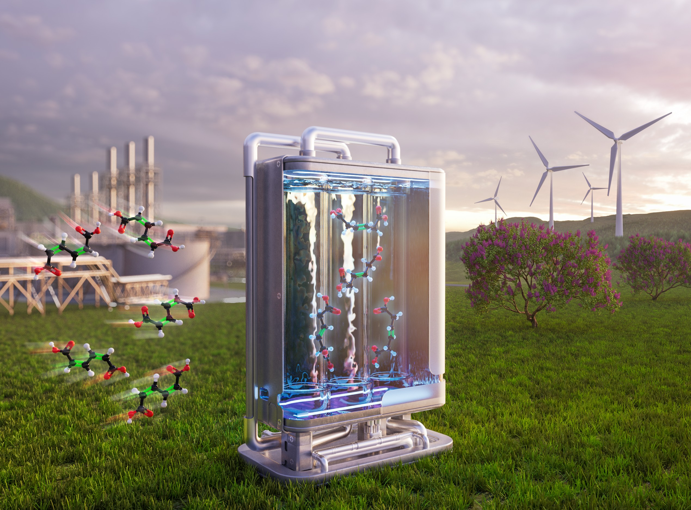
94. Dell’Anna, M. N.; Gupta, G.; Prabhu, P. T.; Chu, T.-H.; Roling, L. T.; Tessonnier, J.-P.; Local Reactivity Descriptors to Decipher the Electrochemical Hydrogenation of Unsaturated Carboxylic Acids, Green Chem. 2023, 25, 10387-10397. [link]
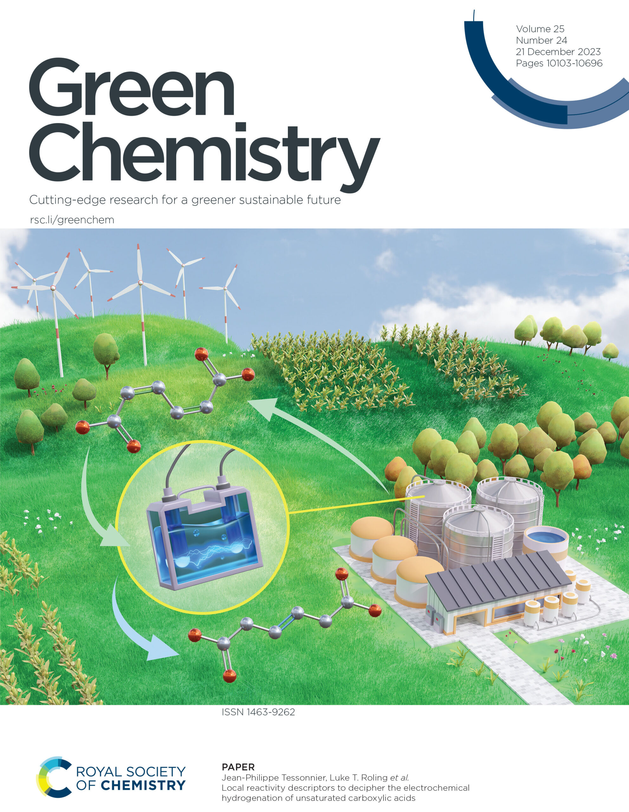
- D. Vincent Sahayaraj, L. A, A. J. Kohler, H. Bateni, H. Radhakrishnan, A. Saraeian, B. H. Shanks, X. Bai, J.-P. Tessonnier, An Effective Strategy to Produce Highly Amenable Cellulose and Enhance Lignin Upgrading to Aromatic and Olefinic Hydrocarbons, Energy Environ. Sci., 2023, 16, 97-112. [link]
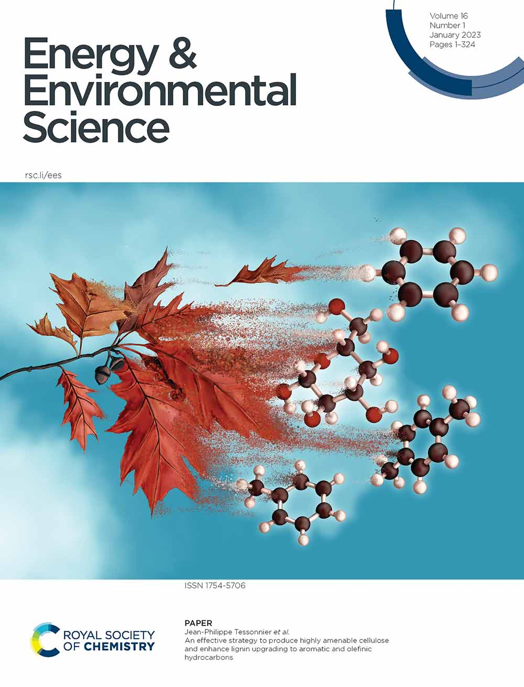
- H. Bateni, P. T. Prabhu, H. E. Gebur, J.-P. Tessonnier, Bottom-Up Synthesis Strategies Enabling the Investigation of Metal Catalyst-Carbon Support Interactions, C, 2022, 8, 37. [link]
- R. G. Rao, R. Blume, M. T. Greiner, P. Liu, T. W. Hansen, K. S. Dreyer, D. D. Hibbitts, J.-P. Tessonnier, Oxygen-Doped Carbon Supports Modulate the Hydrogenation Activity of Palladium Nanoparticles through Electronic Metal–Support Interactions, ACS Catal., 2022, 12, 7344-7356. [link]
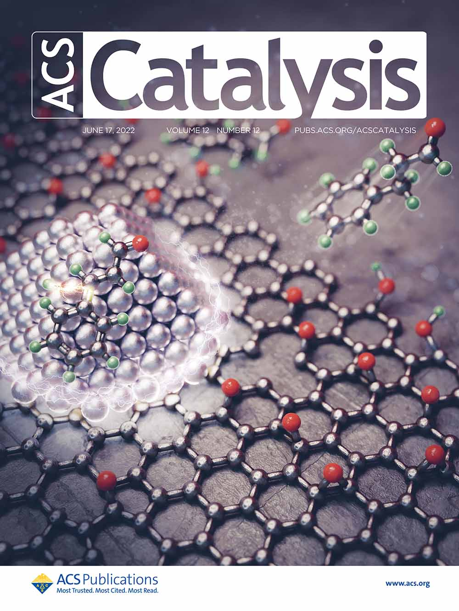
- A. Saraeian, G. Gupta, R. Johnson, R. W. Dorn, A. M. Kauffmann, H. Bateni, J.-P. Tessonnier, L. T. Roling, A. J. Rossini, B. H. Shanks, Hydrogenation/Hydrodeoxygenation Selectivity Modulation by Cometal Addition to Palladium on Carbon-Coated Supports, ACS Sustainable Chem. Eng., 2022, 20, 7759-7771. [link]
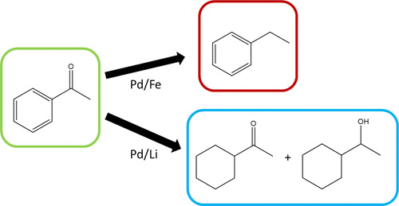
- P. Carter, J. L. Trettin, T.-H. Lee, N. L. Chalgren, M. J. Forrester, B. H. Shanks, J.-P. Tessonnier, E. W. Cochran, Bioenabled Platform to Access Polyamides with Built-In Target Properties, J. Am. Chem. Soc., 2022, 144, 9548-9553. [link]
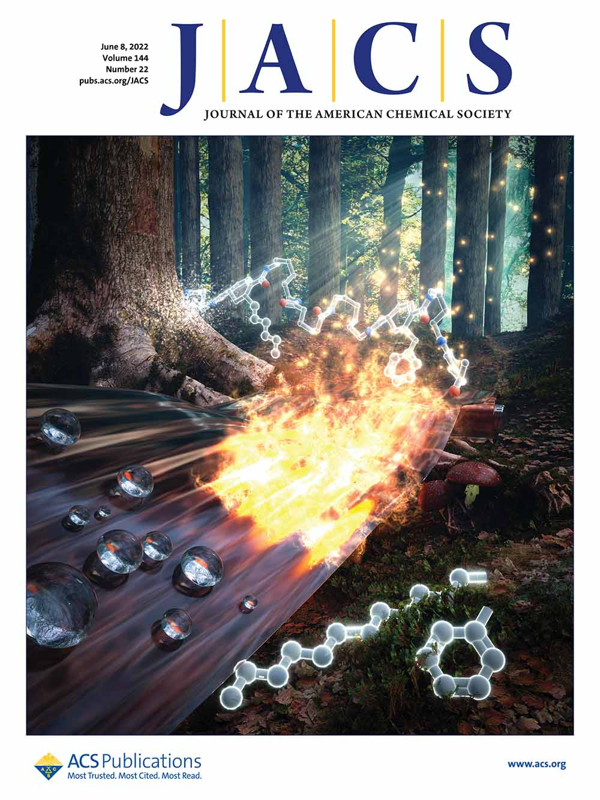
- L. A, H. Radhakrishnan, D. Vincent Sahayaraj, J.-P. Tessonnier, H. Hu, X. Bai, One-Pot Production of Oxygenated Monomers and Selectively Oxidized Lignin from Biomass Based on Plasma Electrolysis, Green Chem., 2021, 23, 9109-9125. [link]
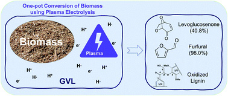
- D. Vincent Sahayaraj, L. A, E. M. Mitchell, X. Bai, J.-P. Tessonnier, Comparative Study of the Solvolytic Deconstruction of Corn Stover Lignin in Batch and Flow-through Reactors , Green Chem., 2021, 23, 7731-7742. [link]
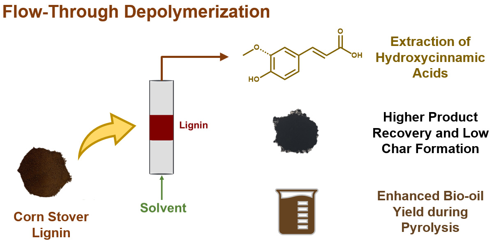
- S. Abdolmohammadi, D. Gansebom, S. Goyal, T.-H. Lee, B. Kuehl, M. J. Forrester, F.-Y. Lin, N. Hernández, B. H. Shanks, J.-P. Tessonnier, E. W. Cochran, Analysis of the Amorphous and Interphase Influence of Comononomer Loading on Polymer Properties toward Forwarding Bioadvantaged Copolyamides, Macromolecules, 2021, 54, 17910-7924. [link]
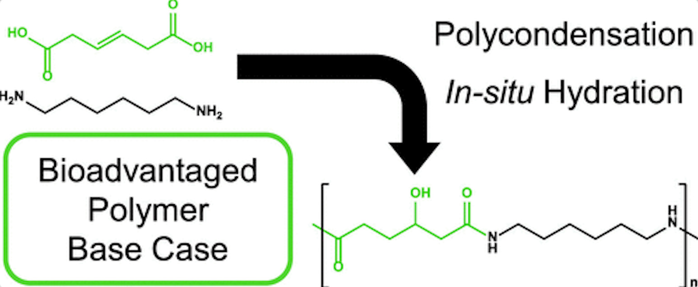
- M. N. Dell’Anna, M. Laureano, H. Bateni, J. E. Matthiesen, L. Zaza, M. P. Zembrzuski, T. J. Paskach, J.-P. Tessonnier, Electrochemical Hydrogenation of Bioprivileged cis,cis-Muconic Acid to trans-3-Hexenedioic Acid: From Lab Synthesis to Bench-Scale Production and Beyond, Green Chem., 2021, 23, 6456-6468. [link]
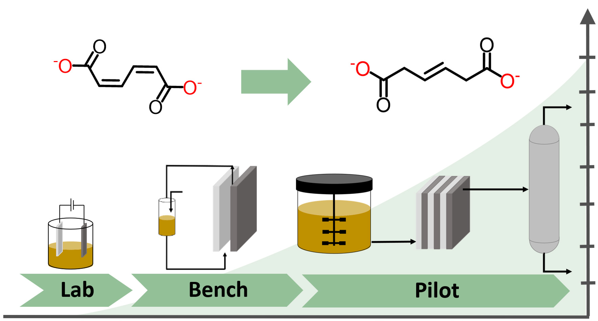
- T. Wirtanen, T. Prenzel, J.-P. Tessonnier, S. R. Waldvogel, Cathodic Corrosion of Metal Electrodes—How to Prevent It in Electroorganic Synthesis, Chem. Rev., 2021, 121, 10241-10270. [link]
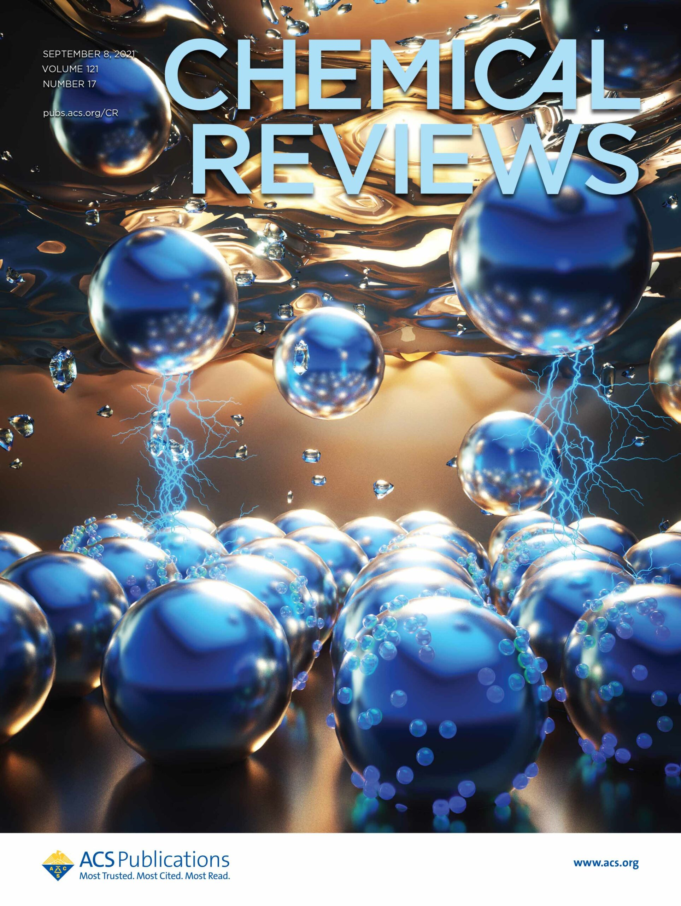
- J. Huo, J.-P. Tessonnier, B. H. Shanks, Improving Hydrothermal Stability of Supported Metal Catalysts for Biomass Conversions: A Review, ACS Catal., 2021, 11, 5248-5270. [link]
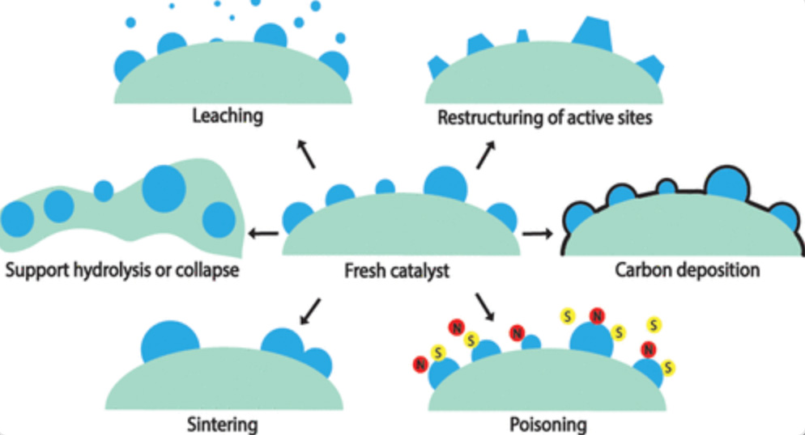
- E. M. Petersen, R. G. Rao, B. C. Vance, J.-P. Tessonnier, SiO2/SiC Supports with Tailored Thermal Conductivity to Reveal the Effect of Surface Temperature on Ru-Catalyzed CO2 Methanation, Appl. Catal., B, 2021, 286, 119904. [link]
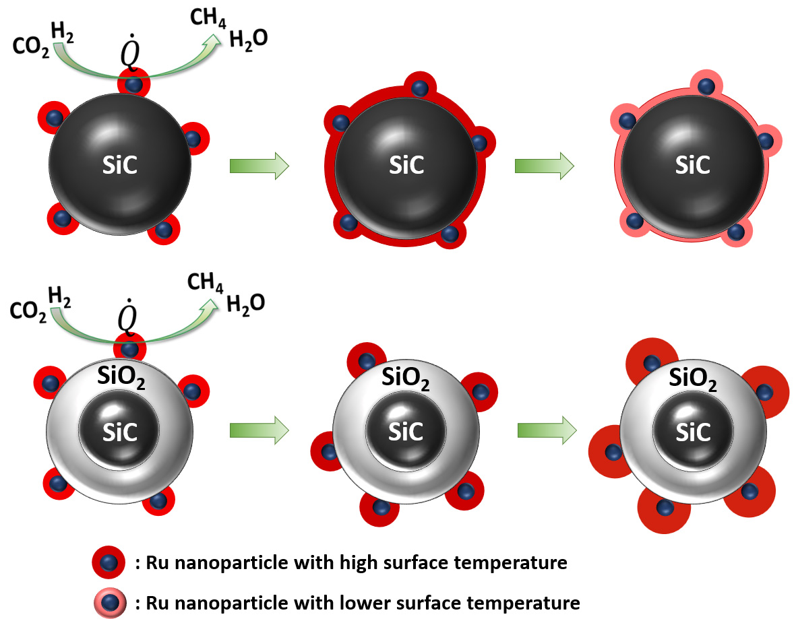
- . J. M. Carraher, P. Carter, R. G. Rao, M. J. Forrester, T. Pfennig, B. H. Shanks, E. W. Cochran, J.-P. Tessonnier, Solvent-Driven Isomerization of cis,cis-Muconic Acid for the Production of Specialty and Performance-Advantaged Cyclic Biobased Monomers, Green Chem., 2020, 22, 6444-6454. [link]
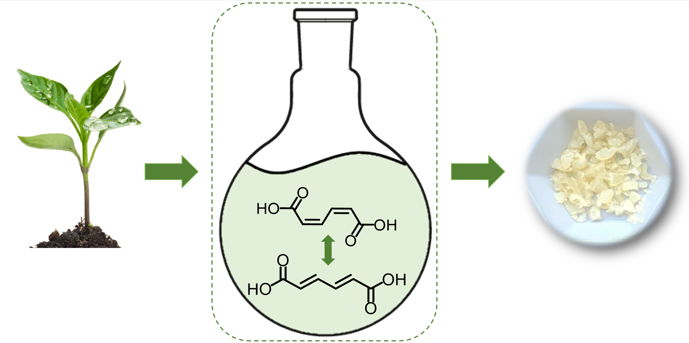
- S. S. Chen, Y. Cao, D. C. W. Tsang, J.-P. Tessonnier, J. Shang, D. Hou, Z. Shen, S. Zhang, Y. S. Ok, K. C. W. Wu, Effective Dispersion of MgO Nanostructure on Biochar Support as a Basic Catalyst for Glucose Isomerization, ACS Sustainable Chem. Eng., 2020, 8, 6990-7001. [link]
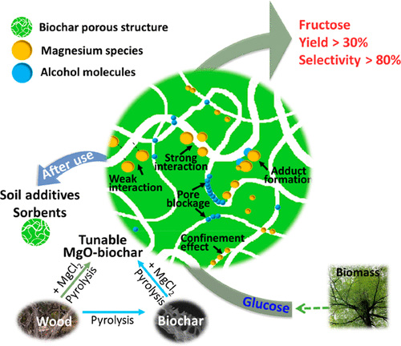
- S. S. Chen, D. C. W. Tsang, J.-P. Tessonnier, Comparative Investigation of Homogeneous and Heterogeneous Brønsted Base Catalysts for the Isomerization of Glucose to Fructose in Aqueous Media, Appl. Catal., B, 2020, 261, 118126. [link]
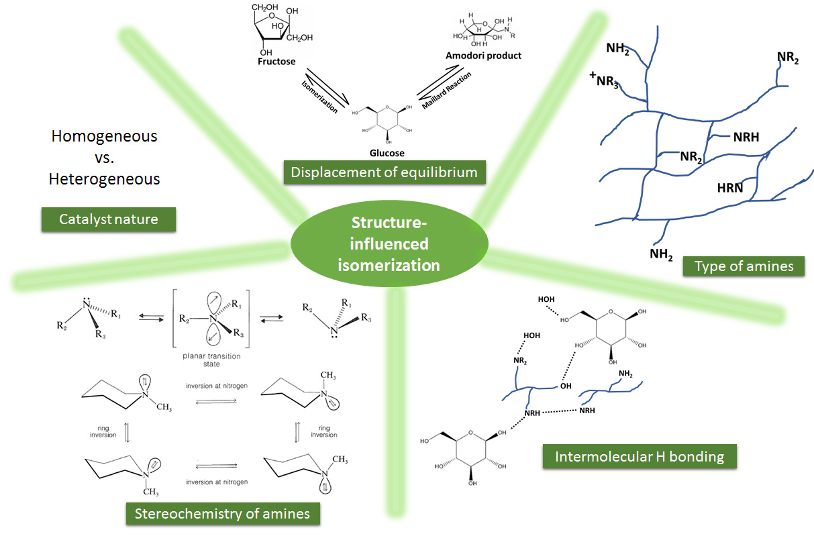
- S. S. Chen, J. M. Carraher, G. Tuci, A. Rossin, C. A. Raman, L. Luconi, D. C. W. Tsang, G. Giambastiani, J.-P. Tessonnier, Engineered Nitrogen-Decorated Carbon Networks for the Metal-Free Catalytic Isomerization of Glucose to Fructose, ACS Sustainable Chem. Eng., 2019, 7, 16959-16963. [link]
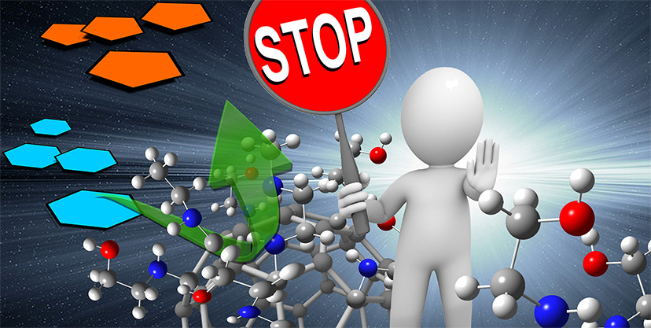
- S. S. Chen, I. K. M. Yu, D.-W. Cho, H. Song, D. C. W. Tsang, J.-P. Tessonnier, Y. S. Ok, C. S. Poon, Selective Glucose Isomerization to Fructose via a Nitrogen-doped Solid Base Catalyst Derived from Spent Coffee Grounds, Sustainable Chem. Eng., 2018, 6, 16113-16120. [link]
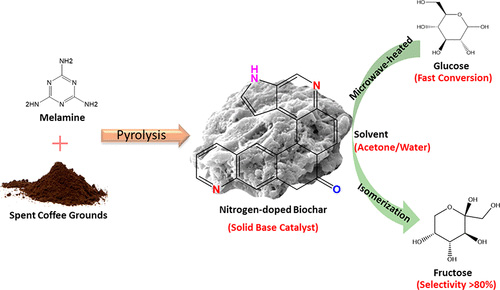
- X. H. Chadderdon, D. J. Chadderdon, J. E. Matthiesen, Y. Qiu, J. M. Carraher, J.-P. Tessonnier, W. Li, Mechanisms of Furfural Reduction on Metal Electrodes: Distinguishing Pathways for Selective Hydrogenation of Bioderived Oxygenates, J. Am. Chem. Soc., 2017, 139, 14120-14128. [link]
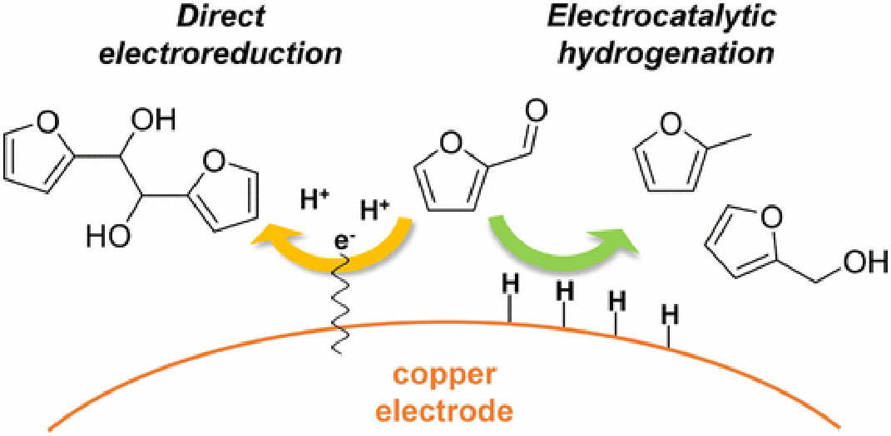
- T. Pfennig, J. M. Carraher, A. Chemburkar, R. L. Johnson, A. T. Anderson, J.-P. Tessonnier, M. Neurock, B. H. Shanks, A New Selective Route Towards Benzoic Acid and Derivatives from Biomass-Derived Coumalic Acid, Green Chem., 2017, 19, 4879-4888. [link]
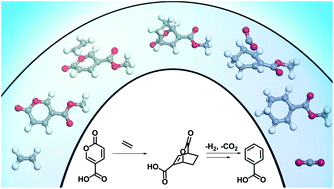
- T. C. Hoff, M. J. Holmes, J. Proano-Aviles, L. Emdadi, D. Liu, R. C. Brown, J.-P. Tessonnier, Decoupling the Role of External Mass Transfer and Intracrystalline Pore Diffusion on the Selectivity of Hzsm-5 for the Catalytic Fast Pyrolysis of Biomass, ACS Sustainable Chem. Eng., 2017, 5, 8766-8776. [link]
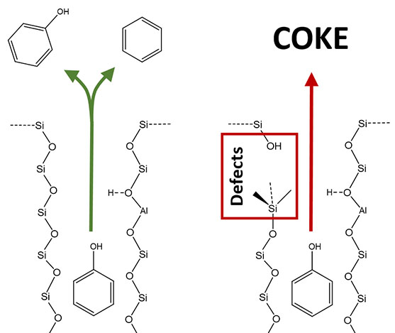
- R. G. Rao, R. Blume, T. W. Hansen, E. Fuentes, K. Dreyer, S. Moldovan, O. Ersen, D. D. Hibbitts, Y. J. Chabal, R. Schlögl, J.-P. Tessonnier, Interfacial Charge Distributions in Carbon-Supported Palladium Catalysts, Nature Commun., 2017, 8, 340. [link]
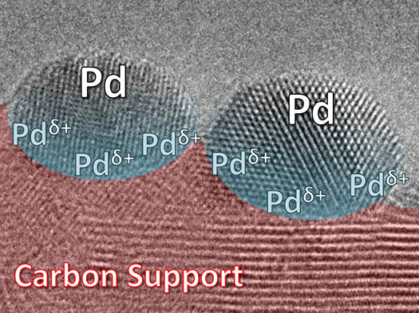
- P. Losch, T. C. Hoff, J. Kolb, C. Bernardon, J.-P. Tessonnier, B. Louis, Mesoporous ZSM-5 Zeolites in Acid Catalysis: Top-Down Vs. Bottom-up Approach, Catalysts, 2017, 7, 225. [link]
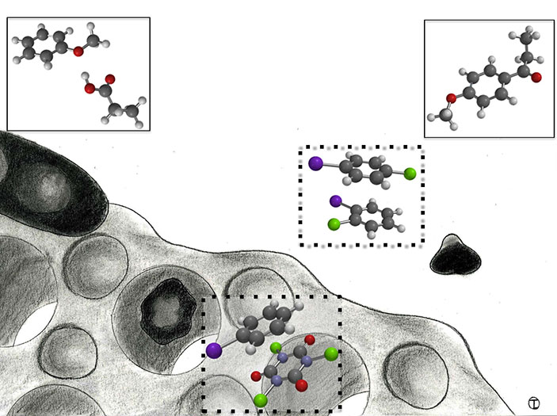
- J. M. Carraher, T. Pfennig, R. G. Rao, B. H. Shanks, J.-P. Tessonnier, cis,cis-Muconic Acid Isomerization and Catalytic Conversion to Biobased Cyclic-C6-1,4-Diacid Monomers, Green Chem., 2017, 19, 3042-3050. [link]
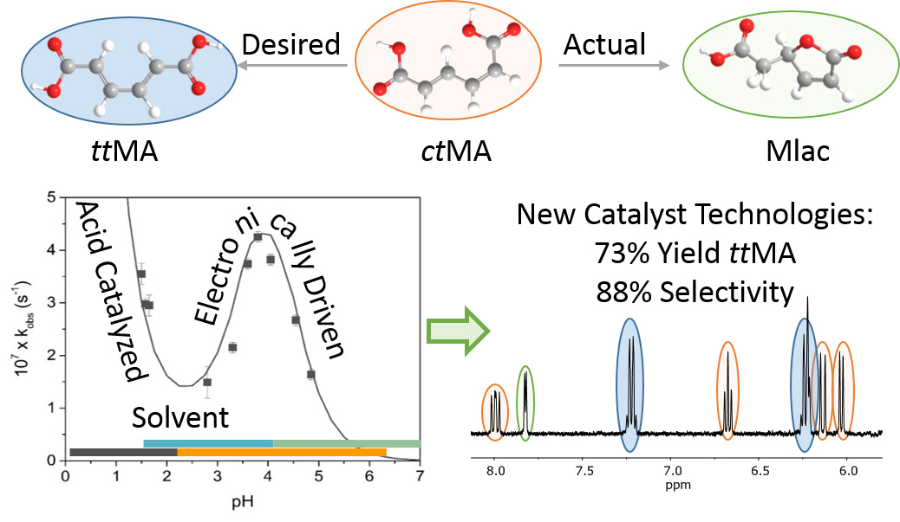
- T. C. Hoff, D. W. Gardner, R. Thilakaratne, J. Proano-Aviles, R. C. Brown, J.-P. Tessonnier, Elucidating the Effect of Desilication on Aluminum-Rich Zsm-5 Zeolite and Its Consequences on Biomass Catalytic Fast Pyrolysis, Appl. Catal. A, 2017, 529, 68-78. [link]
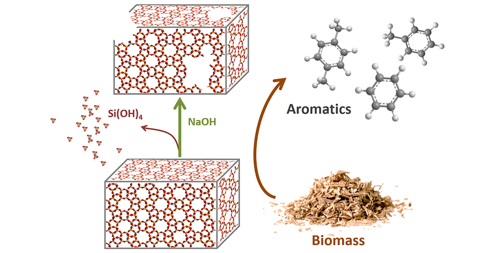
- J. M. Carraher, J. E. Matthiesen, J.-P. Tessonnier, Comments on “Thermodynamics of Cis,Cis-Muconic Acid Solubility in Various Polar Solvents at Low Temperature Range”, J. Mol. Liq., 2016, 224, 420-422. [link]
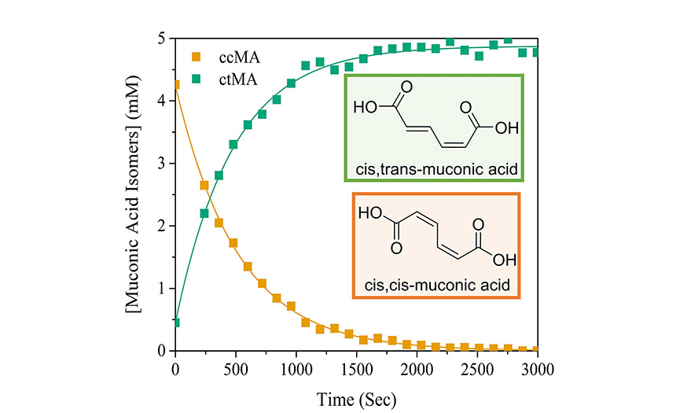
- J. E. Matthiesen, M. Suástegui, Y. Wu, M. Viswanathan, Y. Qu, M. Cao, N. Rodriguez-Quiroz, A. Okerlund, G. Kraus, D. R. Raman, Z. Shao, J.-P. Tessonnier, Electrochemical Conversion of Biologically Produced Muconic Acid: Key Considerations for Scale-up and Corresponding Technoeconomic Analysis, ACS Sustainable Chem. Eng., 2016, 4, 7098-7109. [link]
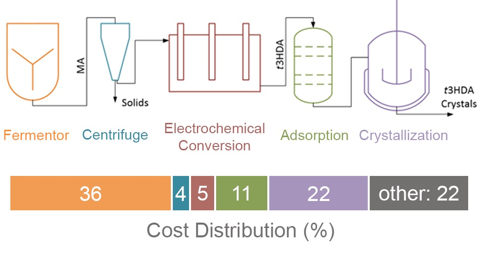
- T. C. Hoff, R. Thilakaratne, D. W. Gardner, R. C. Brown, J.-P. Tessonnier, Thermal Stability of Aluminum-Rich ZSM-5 Zeolites and Consequences on Aromatization Reactions, J. Phys. Chem. C, 2016, 120, 20103-20113. [link]
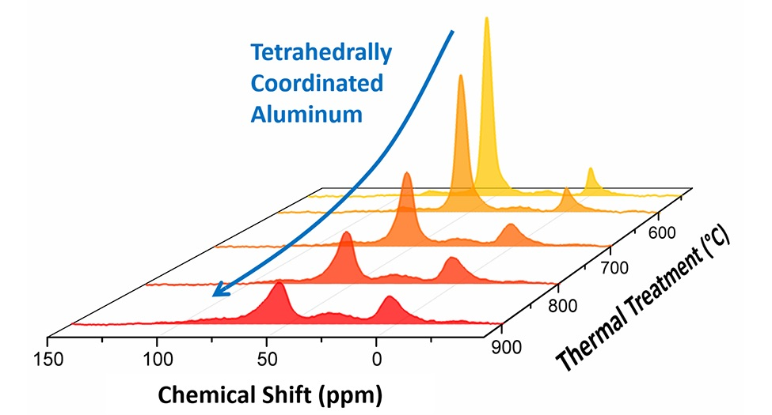
- J. E. Matthiesen, J. M. Carraher, M. Vasiliu, D. A. Dixon, J.-P. Tessonnier, Electrochemical Conversion of Muconic Acid to Biobased Diacid Monomers, ACS Sustainable Chem. Eng., 2016, 4, 3575-3585. [link]
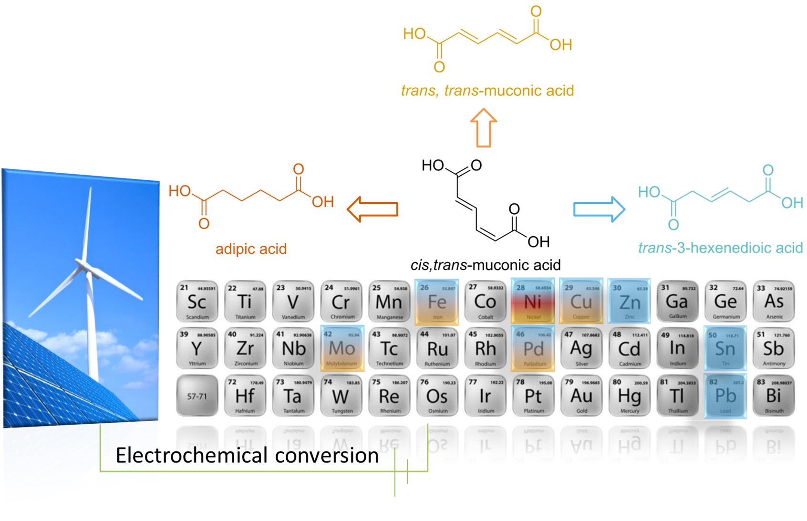
- T. C. Hoff, D. W. Gardner, R. Thilakaratne, K. Wang, T. W. Hansen, R. C. Brown, J.-P. Tessonnier, Tailoring Zsm-5 Zeolites for the Fast Pyrolysis of Biomass to Aromatic Hydrocarbons, ChemSusChem, 2016, 9, 1473-1482. [link]
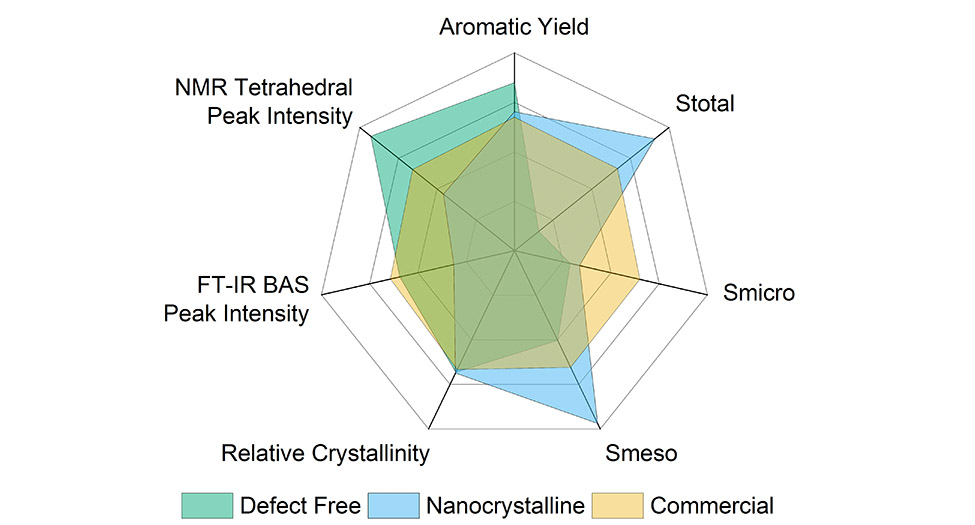
- M. Suástegui, J. E. Matthiesen, J. M. Carraher, N. Hernandez, N. Rodriguez Quiroz, A. Okerlund, E. W. Cochran, Z. Shao, J.-P. Tessonnier, Combining Metabolic Engineering and Electrocatalysis: Application to the Production of Polyamides from Sugar, Angew. Chem. Int. Ed., 2016, 55, 2368-2373. [link]
- Selected as Angewandte Chemie International Edition front cover [link]
- Top 5% of all research outputs scored by Altmetric. Among the highest scoring outputs from this source (#20 of 16,718)
- Research highlighted in ChemSusChem as a “breakthrough in biomass conversion” [link]
- More than 15 news stories, including from the Biofuels Digest, NanoWerk, and Biomass Magazine
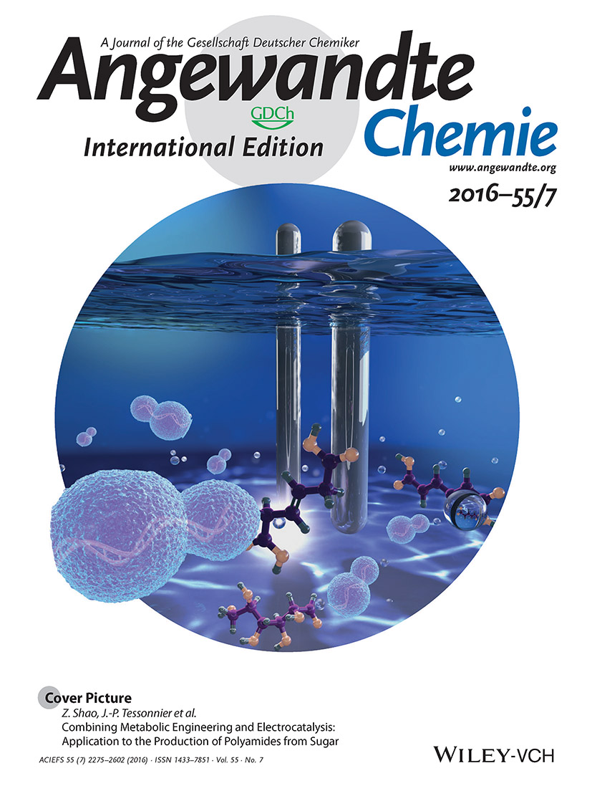
- R. Thilakaratne, J.-P. Tessonnier, R. C. Brown, Conversion of Methoxy and Hydroxyl Functionalities of Phenolic Monomers over Zeolites, Green Chem., 2016, 18, 2231-2239. [link]
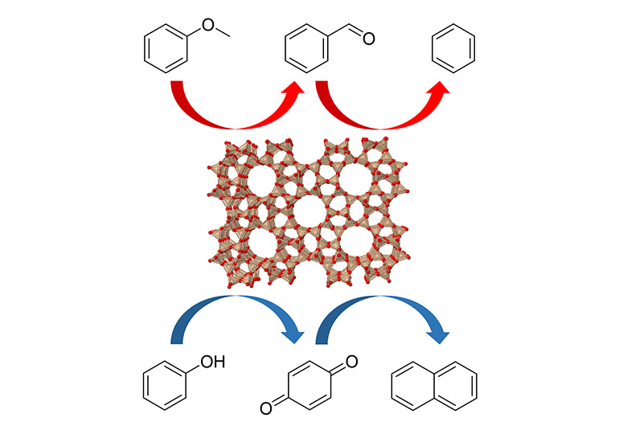
- J. M. Carraher, S. M. Curry, J.-P. Tessonnier, Kinetics, Reaction Orders, Rate Laws, and Their Relation to Mechanisms: A Hands-On Introduction for High School Students Using Portable Spectrophotometry, J. Chem. Educ. 2016, 93, 172-174. [link]
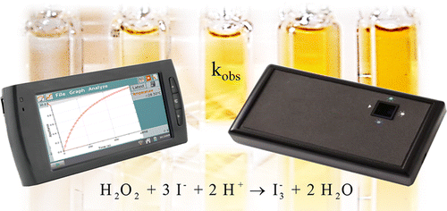
- R. Blume, D. Rosenthal, J.-P. Tessonnier, H. Li, A. Knop-Gericke, R. Schlögl, Characterizing Graphitic Carbon with X-ray Photoelectron Spectroscopy: A Step-by-Step Approach, ChemCatChem 2015, 7, 2871-2881. [link]
- Invited article for ChemCatChem’s special issue on Carbon in the Catalysis Community.
- Highlighted in Angewandte Chemie International Edition [link]
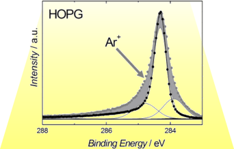
- D. W. Gardner, J. Huo, T. C. Hoff, R. L. Johnson, B. H. Shanks, J.-P. Tessonnier, Insights into the Hydrothermal Stability of ZSM-5 under Relevant Biomass Conversion Reaction Conditions, ACS Catal. 2015, 5, 4418-4422. [link]
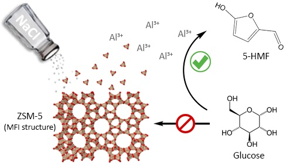
- J. M. Carraher, C. N. Fleitman, J.-P. Tessonnier, Kinetic and Mechanistic Study of Glucose Isomerization Using Homogeneous Organic Brønsted Base Catalysts in Water, ACS Catal. 2015, 5, 3162-3173. [link]
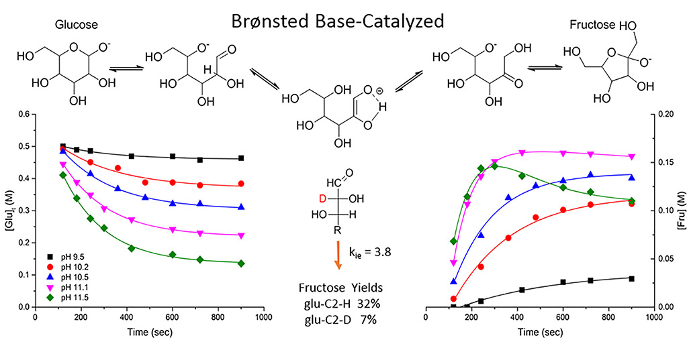
- C. Liu, J. M. Carraher, J. L. Swedberg, C. R. Herndon, C. N. Fleitman, J.-P. Tessonnier, Selective Base-Catalyzed Isomerization of Glucose to Fructose, ACS Catal. 2014, 4, 4295-4298. [link]
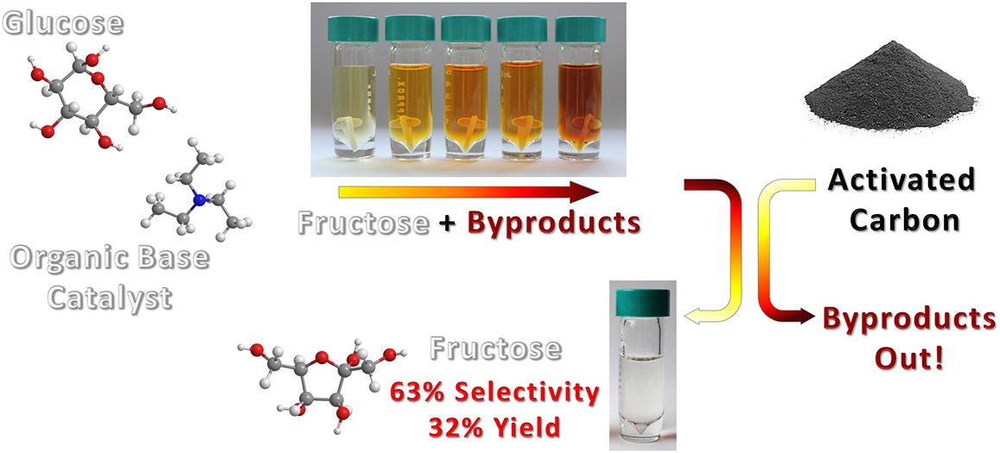
- J. Matthiesen, T. Hoff, C. Liu, C. Pueschel, R. Rao, J.-P. Tessonnier, Functional Carbons and Carbon Nanohybrids for the Catalytic Conversion of Biomass to Renewable Chemicals in the Condensed Phase, Chin. J. Catal. 2014, 35, 842-855. [link]
- Review paper; Special issue on carbon for catalysis. Other invited authors include Teresa J. Bandosz (USA), Gabriele Centi (Italy), De Chen (Norway), Morinobu Endo (Japan), Jose L. Figueiredo (Portugal), Gary L. Haller (USA), Cuong Pham-Huu (France), Zinfer R. Ismagilov (Russia), Oleksiy Khavrychenko (Ukraine), Laura Prati (Italy), Ljubisa Radovic (USA and Chili), Daniel E. Resasco (USA), Philippe Serp (France), Magdalena Titirici (UK), Da-Wei Wang (Austrialia).
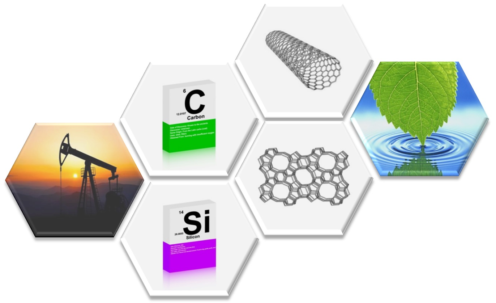
- C. Marichy, P. A. Russo, M. Latino, J.-P. Tessonnier, M.-G. Willinger, N. Donato, G. Neri, N. Pinna, Tin Dioxide–Carbon Heterostructures Applied to Gas Sensing: Structure-Dependent Properties and General Sensing Mechanism, J. Phys. Chem. C 2013, 117, 19729-19739. [link]
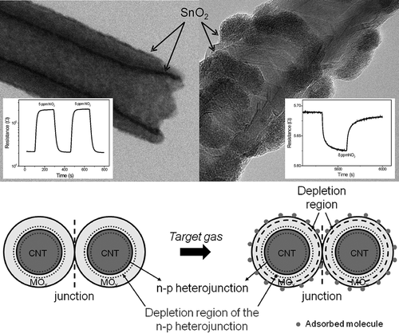
- T. C. da Silva, E. B. Pereira, R. P. dos Santos, B. Louis, J.-P. Tessonnier, M. M. Pereira, Synthesis and Characterization of Vanadium Species Coated on Alumina, Magnesium Oxide and Hydrotalcite Supports to SOx Removal, Appl. Catal. A 2013, 462-463, 46-55. [link]
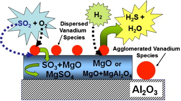
Publications Prior to ISU
- J.-P. Tessonnier, S. Goubert-Renaudin, S. Alia, Y. Yan, M. A. Barteau, Structure, Stability, and Electronic Interactions of Polyoxometalates on Functionalized Graphene Sheets, Langmuir 2013, 29, 393-402. [link]
- J.-P. Tessonnier, F. M. Haas, D. M. Dabbs, F. L. Dryer, R. A. Yetter, M. A. Barteau, Polyoxometalate Clusters Supported on Functionalized Graphene Sheets as Nanohybrids for the Catalytic Combustion of Liquid Fuels, MRS Proceedings 2012, 1451, mrss12-1451-dd18-04. [link]
- J.-P. Tessonnier, M. A. Barteau, Dispersion of Alkyl-Chain-Functionalized Reduced Graphene Oxide Sheets in Nonpolar Solvents, Langmuir 2012, 28, 6691-6697. [link]
- G. Neri, S. G. Leonardi, N. Donato, C. Marichy, J.-P. Tessonnier, M.-G. Willinger, K.-H. Lee, N. Pinna, MOx/CNTs Hetero-Structures for Gas Sensing Applications: Role of CNTs Defects, Procedia Engineering 2012, 47, 1259-1262. [link]
- N. B. A. Mansor, J.-P. Tessonnier, A. Rinaldi, S. Reiche, M. G. Kutty, Chemically Modified Multi-Walled Carbon Nanotubes (MWCNTs) with Anchored Acidic Groups, Sains Malaysiana 2012, 41, 603-609. [link]
- K. Mette, A. Bergmann, J.-P. Tessonnier, M. Hävecker, L. Yao, T. Ressler, R. Schlögl, P. Strasser, M. Behrens, Nanostructured Manganese Oxide Supported on Carbon Nanotubes for Electrocatalytic Water Splitting, ChemCatChem 2012, 4, 851-862. [link]
- Highlighted in Angewandte Chemie International Edition [link]
- C. Marichy, J.-P. Tessonnier, M. C. Ferro, K.-H. Lee, R. Schlögl, N. Pinna, M.-G. Willinger, Labeling and Monitoring the Distribution of Anchoring Sites on Functionalized CNTs by Atomic Layer Deposition, J. Mater. Chem. 2012, 22, 7323-7330. [link]
- R. Arrigo, M. E. Schuster, S. Wrabetz, F. Girgsdies, J.-P. Tessonnier, G. Centi, S. Perathoner, D. S. Su, R. Schlögl, New Insights from Microcalorimetry on the FeOx/CNT-Based Electrocatalysts Active in the Conversion of CO2 to Fuels, ChemSusChem 2012, 5, 577-586. [link]
- S. Sahin, P. Mäki-Arvela, J.-P. Tessonnier, A. Villa, S. Reiche, S. Wrabetz, D. S. Su, R. Schlögl, T. Salmi, D. Y. Murzin, Palladium Catalysts Supported on N-Functionalized Hollow Vapor-Grown Carbon Nanofibers: The Effect of the Basic Support and Catalyst Reduction Temperature, Appl. Catal. A 2011, 408, 137-147. [link]
- M. J. Becker, W. Xia, J.-P. Tessonnier, R. Blume, L.-D. Yao, R. Schlögl, M. Muhler, Optimizing the Synthesis of Cobalt-Based Catalysts for the Selective Growth of Multiwalled Carbon Nanotubes under Industrially Relevant Conditions, Carbon 2011, 49, 5253-5264. [link]
- J.-P. Tessonnier, D. S. Su, Recent Progress on the Growth Mechanism of Carbon Nanotubes: A Review, ChemSusChem 2011, 4, 824-847. [link]
- Featured on the journal’s front cover, special issue on carbon nanotubes.
- A. Rinaldi, J.-P. Tessonnier, M. E. Schuster, R. Blume, F. Girgsdies, Q. Zhang, T. Jacob, S. B. Abd Hamid, D. S. Su, R. Schlögl, Dissolved Carbon Controls the Initial Stages of Nanocarbon Growth, Angew. Chem. Int. Ed. 2011, 50, 3313-3317. [link]
- Highlighted on ChemistryViews [link]
- F. Ocampo, J. A. Cunha, M. R. de Lima Santos, J. P. Tessonnier, M. M. Pereira, B. Louis, Synthesis of Zeolite Crystals with Unusual Morphology: Application in Acid Catalysis, Appl. Catal. A 2010, 390, 102-109. [link]
- Ranked #17 in the TOP 25 Hottest Articles published in this journal from October to December 2010.
- J.-P. Tessonnier, M. Becker, W. Xia, F. Girgsdies, R. Blume, L. Yao, D. S. Su, M. Muhler, R. Schlögl, Spinel-Type Cobalt–Manganese-Based Mixed Oxide as Sacrificial Catalyst for the High-Yield Production of Homogeneous Carbon Nanotubes, ChemCatChem 2010, 2, 1559-1561. [link]
- F. V. Pinto, A. S. Escobar, B. G. de Oliveira, Y. L. Lam, H. S. Cerqueira, B. Louis, J.-P. Tessonnier, D. S. Su, M. Maciel Pereira, The Effect of Alumina on FCC Catalyst in the Presence of Nickel and Vanadium, Appl. Catal. A 2010, 388, 15-21. [link]
- T. Ressler, A. Walter, J. Scholz, J.-P. Tessonnier, D. S. Su, Structural Characterization of Mo Oxide Catalysts Supported on Hollow Carbon Nanofibers Using X-Ray Absorption Spectroscopy, J. Catal. 2010, 271, 305-314. [link]
- J. McGregor, Z. Huang, E. P. J. Parrott, J. A. Zeitler, K. L. Nguyen, J. M. Rawson, A. Carley, T. W. Hansen, J.-P. Tessonnier, D. S. Su, D. Teschner, E. M. Vass, A. Knop-Gericke, R. Schlögl, L. F. Gladden, Active Coke: Carbonaceous Materials as Catalysts for Alkane Dehydrogenation, J. Catal. 2010, 269, 329-339. [link]
- A. Villa, J.-P. Tessonnier, O. Majoulet, D. S. Su, R. Schlögl, Transesterification of Triglycerides Using Nitrogen-Functionalized Carbon Nanotubes, ChemSusChem 2010, 3, 241-245. [link]
- Highlighted in Biofuel Bioprod. Bior. 2010, 4, 7 [link].
- B. Louis, F. Ocampo, H.-S. Yun, J.-P. Tessonnier, M. Maciel Pereira, Hierarchical Pore ZSM-5 Zeolite Structures: From Micro to Macro-Engineering of Structured Catalysts, Chem. Eng. J. 2010, 161, 397-402. [link]
- J. J. Delgado, X. Chen, J.-P. Tessonnier, M. E. Schuster, E. Del Rio, R. Schlögl, D. S. Su, Influence of the Microstructure of Carbon Nanotubes on the Oxidative Dehydrogenation of Ethylbenzene to Styrene, Catal. Today 2010, 150, 49-54. [link]
- S. Sahin, P. Mäki-Arvela, J.-P. Tessonnier, A. Villa, L. Shao, D. S. Su, R. Schlögl, T. Salmi, D. Y. Murzin, Effect of the Carbon Nanotube Basicity in Pd/N-CNT Catalysts on the Synthesis of R-1-Phenyl Ethyl Acetate, Stud. Surf. Sci. Catal. 2010, 175, 283-287. [link]
- J.-P. Tessonnier, D. Rosenthal, F. Girgsdies, J. Amadou, D. Begin, C. Pham-Huu, D. S. Su, R. Schlögl, Influence of the Graphitisation of Hollow Carbon Nanofibers on Their Functionalisation and Subsequent Filling with Metal Nanoparticles, Chem. Commun. 2009, 7158-7160. [link]
- G. Centi, M. Gangeri, M. Fiorello, S. Perathoner, J. Amadou, D. Bégin, M. J. Ledoux, C. Pham-Huu, M. E. Schuster, D. S. Su, J.-P. Tessonnier, R. Schlögl, The Role of Mechanically Induced Defects in Carbon Nanotubes to Modify the Properties of Electrodes for Pem Fuel Cell, Catal. Today 2009, 147, 287-299. [link]
- J.-P. Tessonnier, O. Ersen, G. Weinberg, C. Pham-Huu, D. S. Su, R. Schlögl, Selective Deposition of Metal Nanoparticles Inside or Outside Multiwalled Carbon Nanotubes, ACS Nano 2009, 3, 2081-2089. [link]
- F. Ocampo, H.-S. Yun, M. Maciel Pereira, J.-P. Tessonnier, B. Louis, Design of MFI Zeolite-Based Composites with Hierarchical Pore Structure: A New Generation of Structured Catalysts, Cryst. Growth Des. 2009, 9, 3721-3729. [link]
- A. Villa, J.-P. Tessonnier, O. Majoulet, D. S. Su, R. Schlögl, Amino-Functionalized Carbon Nanotubes as Solid Basic Catalysts for the Transesterification of Triglycerides, Chem. Commun. 2009, 4405-4407. [link]
- J.-P. Tessonnier, A. Villa, O. Majoulet, D. S. Su, R. Schlögl, Defect-Mediated Functionalization of Carbon Nanotubes as a Route to Design Single-Site Basic Heterogeneous Catalysts for Biomass Conversion, Angew. Chem. Int. Ed. 2009, 48, 6543-6546. [link]
- E. P. J. Parrott, J. A. Zeitler, J. McGregor, O. Shu-Pei, W. I. Milne, J.-P. Tessonnier, D. S. Su, R. Schlögl, L. F. Gladden, The Use of Terahertz Spectroscopy as a Sensitive Probe in Discriminating the Electronic Properties of Structurally Similar Multi-Walled Carbon Nanotubes, Adv. Mater. 2009, 21, 3953-3957. [link]
- E. P. J. Parrott, J. A. Zeitler, J. McGregor, S.-P. Oei, H. E. Unalan, S.-C. Tan, W. I. Milne, J.-P. Tessonnier, R. Schlögl, L. F. Gladden, Understanding the Dielectric Properties of Heat-Treated Carbon Nanofibers at Terahertz Frequencies: A New Perspective on the Catalytic Activity of Structured Carbonaceous Materials, J. Phys. Chem. C 2009, 113, 10554-10559. [link]
- J.-P. Tessonnier, D. Rosenthal, T. W. Hansen, C. Hess, M. E. Schuster, R. Blume, F. Girgsdies, N. Pfänder, O. Timpe, D. S. Su, R. Schlögl, Analysis of the Structure and Chemical Properties of Some Commercial Carbon Nanostructures, Carbon 2009, 47, 1779-1798. [link]
- Ranked #2 in the TOP 25 Hottest Articles published in Materials Science (among all papers published in the 117 Elsevier materials science journals) from April to June 2009.
- M. Gangeri, S. Perathoner, S. Caudo, G. Centi, J. Amadou, D. Bégin, C. Pham-Huu, M. J. Ledoux, J.-P. Tessonnier, D. S. Su, R. Schlögl, Fe and Pt Carbon Nanotubes for the Electrocatalytic Conversion of Carbon Dioxide to Oxygenates, Catal. Today 2009, 143, 57-63. [link]
- E. P. J. Parrott, J. A. Zeitler, J. McGregor, O. Shu-Pei, W. I. Milne, J.-P. Tessonnier, D. S. Su, R. Schlögl, L. F. Gladden, Untangling the Electronic Properties in Highly Similar Multi-Walled Carbon Nanotubes by Terahertz Spectroscopy. In Proceedings of the 34th International Conference on Infrared, Millimeter, and Terahertz Waves (IRMMW-THz 2009), Busan, 2009. [link]
- J.-P. Tessonnier, B. Louis, S. Rigolet, M. J. Ledoux, C. Pham-Huu, Methane Dehydro-Aromatization on Mo/ZSM-5: About the Hidden Role of Brønsted Acid Sites, Appl. Catal. A 2008, 336, 79-88. [link]
- J. Zhang, Y.-S. Hu, J.-P. Tessonnier, G. Weinberg, J. Maier, R. Schlögl, D. S. Su, CNFs@CNTs: Superior Carbon for Electrochemical Energy Storage, Adv. Mater. 2008, 20, 1450-1455. [link]
- E. P. J. Parrott, J. A. Zeitler, J. McGregor, O. Shu-Pei, H. E. Unalan, T. Swee-Ching, W. I. Milne, J.-P. Tessonnier, R. Schlögl, L. F. Gladden, Understanding the Catalytic Activity of Heat Treated Carbon Nanofibres: Investigation of Their Dielectric Properties at THz Frequencies In Proceedings of the 33rd International Conference on Infrared, Millimeter and Terahertz Waves (IRMMW-THz 2008), Pasadena, CA, 2008. [link]
- J.-P. Tessonnier, B. Louis, M.-J. Ledoux, C. Pham-Huu, Green Catalysis for Production of Chemicals and CO-Free Hydrogen, Catal. Commun. 2007, 8, 1787-1792. [link]
- S. Ivanova, B. Louis, B. Madani, J.-P. Tessonnier, M.-J. Ledoux, C. Pham-Huu, ZSM-5 Coatings on Beta-SiC Monoliths: A Possible New Structured Catalyst for the Methanol-to-Olefins Process, J. Phys. Chem. C 2007, 111, 4368-4374. [link]
- Z. El Berrichi, B. Louis, J.-P. Tessonnier, O. Ersen, L. Cherif, M.-J. Ledoux, C. Pham-Huu, One-Pot Synthesis of Ga-SBA-15: Activity Comparison with Ga-Post-Treated SBA-15 Catalysts, Appl. Catal. A 2007, 316, 219-225. [link]
- J. Amadou, D. Bégin, P. Nguyen, J.-P. Tessonnier, T. Dintzer, E. Vanhaecke, M.-J. Ledoux, C. Pham-Huu, Synthesis of a Carbon Nanotube Monolith with Controlled Macroscopic Shape, Carbon 2006, 44, 2587-2589. [link]
- J.-P. Tessonnier, B. Louis, S. Walspurger, J. Sommer, M.-J. Ledoux, C. Pham-Huu, Quantitative Measurement of the Bronsted Acid Sites in Solid Acids: Toward a Single-Site Design of Mo-Modified ZSM-5 Zeolite, J. Phys. Chem. B 2006, 110, 10390-10395. [link]
- G. Winé, J.-P. Tessonnier, S. Rigolet, C. Marichal, M.-J. Ledoux, C. Pham-Huu, Beta Zeolite Supported on a β-SiC Foam Monolith: A Diffusionless Catalyst for Fixed-Bed Friedel-Crafts Reactions, J. Mol. Catal. A: Chem. 2006, 248, 113-120. [link]
- Y. Sun, S. Walspurger, J.-P. Tessonnier, B. Louis, J. Sommer, Highly Dispersed Iron Oxide Nanoclusters Supported on Ordered Mesoporous SBA-15: A Very Active Catalyst for Friedel-Crafts Alkylations, Appl. Catal. A 2006, 300, 1-7. [link]
- Ranked #25 in the TOP 25 Hottest Articles published in this journal from January to March 2006.
- Z. El Berrichi, L. Cherif, O. Orsen, J. Fraissard, J.-P. Tessonnier, E. Vanhaecke, B. Louis, M.-J. Ledoux, C. Pham-Huu, Ga Doped SBA-15 as an Active and Stable Catalyst for Friedel-Crafts Liquid-Phase Acylation, Appl. Catal. A 2006, 298, 194-202. [link]
- J.-P. Tessonnier, L. Pesant, G. Ehret, M. J. Ledoux, C. Pham-Huu, Pd Nanoparticles Introduced Inside Multi-Walled Carbon Nanotubes for Selective Hydrogenation of Cinnamaldehyde into Hydrocinnamaldehyde, Appl. Catal. A 2005, 288, 203-210. [link]
- Ranked #25 in the TOP 25 Hottest Articles published in this journal from July to September 2005.
- J.-P. Tessonnier, G. Winé, C. Estournès, C. Leuvrey, M.-J. Ledoux, C. Pham-Huu, Carbon Nanotubes as a 1D Template for the Synthesis of Air Sensitive Materials: About the Confinement Effect, Catal. Today 2005, 102-103, 29-33. [link]
- B. Louis, J.-P. Tessonnier, S. Walspurger, C. Pham-Huu, J. Sommer, M.-J. Ledoux, Innovative Tool for Determining the Number of Brönsted Acid Sites in Solid Acids: Towards the Chemical Composition of Zeolites, Stud. Surf. Sci. Catal. 2005, 158, Part 1, 711-716. [link]
- Z. El Berrichi, L. Cherif, J.-P. Tessonnier, B. Louis, J. Fraissard, M.-J. Ledoux, C. Pham-Huu, GaSBA-15: A New and Active Friedel-Crafts Acylation Catalyst, Stud. Surf. Sci. Catal. 2005, 158, Part 2, 1413-1420. [link]
- C. Pham-Huu, G. Winé, J.-P. Tessonnier, M.-J. Ledoux, S. Rigolet, C. Marichal, Beta Zeolite Nanowire Synthesis under Non-Hydrothermal Conditions Using Carbon Nanotubes as Template, Carbon 2004, 42, 1941-1946. [link]
- J.-M. Nhut, L. Pesant, J.-P. Tessonnier, G. Winé, J. Guille, C. Pham-Huu, M.-J. Ledoux, Mesoporous Carbon Nanotubes for Use as Support in Catalysis and as Nanosized Reactors for One-Dimensional Inorganic Material Synthesis, Appl. Catal. A 2003, 254, 345-363. [link]
- J.-P. Tessonnier, L. Pesant, C. Pham-Huu, G. Ehret, M.-J. Ledoux, Carbon Nanotubes: A Highly Selective Support for the C=C Bond Hydrogenation Reaction, Stud. Surf. Sci. Catal. 2002, 143, 697-704. [link]
- G. Winé, J. Matta, J.-P. Tessonnier, C. Pham-Huu, M.-J. Ledoux, Beta Zeolite Supported on Silicon Carbide for Friedel-Crafts Fixed-Bed Reactions, Chem. Commun. 2003, 530-531. [link]
- G. Winé, J.-P. Tessonnier, C. Pham-Huu, M.-J. Ledoux, Beta Zeolite Supported on a Macroscopic Pre-Shaped SiC as a High Performance Catalyst for Liquid-Phase Benzoylation, Chem. Commun. 2002, 2418-2419. [link]
- J.-M. Nhut, R. Vieira, L. Pesant, J.-P. Tessonnier, N. Keller, G. Ehret, C. Pham-Huu, M.-J. Ledoux, Synthesis and Catalytic Uses of Carbon and Silicon Carbide Nanostructures, Catal. Today, 2002, 76, 11-32. [link]